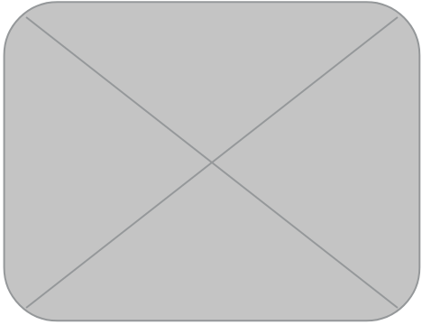

CMU Professional Development Services
Team
- Travis Chambers
- Richard Huang
- Piyush Puri
Opportunity
Professional Development Services consolidating their copious amounts of professional development resources into digestible learning plans for CMU faculty and staff. They have developed “competency areas” to organize silos of professional development, each competency has an assessment to gauge your status in this area. A web application that allows faculty and staff to take assessments for different competencies and view personalized learning plans would equip our client with a new tool to drive increased user engagement.
Outcomes
We have developed a working version of the proposed application that is currently in beta testing. CMU staff and faculty are able to access the web application, pick a competency area, take a quick assessment, and a report will be generated with a learning plan and resources that will help the user improve with that competency area. The user can then email or print out the assessment report so they can view it at a later time to track performance. CMU PDS staff is able to login as an admin and make changes to the assessment as well as the resources available. On the admin side, PDS is also able to use our Excel import feature to pre-populate the database with existing data.
Deliverables
The final project is a Ruby on Rails web application, hosted on AWS EC2 (Amazon Web Services). This web app provides CMU’s faculty and staff a competency assessment that they can take where a learning plan on emerging areas will be generated. The clients have access to both the Github repo and the Github organization of the code base as well as the AWS account that is currently hosting the application. The project also contains various documentation, both technical and user manuals, to help transition next year’s IS team as well as help guide CMU PDS staff’s interactions with the application.